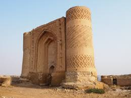

History
In Wasit Governorate, there are more than 420 archaeological sites dating back to different historical periods and civilizations, including the Umayyad and Abbasid eras, as well as some belonging to the Sumerian period.
The historic city of Wasit is located southeast of the modern city of Kut, approximately 65 kilometers away, and about 20 kilometers north of Al-Hayy. The city’s ruins were officially announced in the Iraqi Gazette in 1935. After the end of the Rashidun Caliphate and the rise of the Umayyad rule, Wasit became one of the first cities established during that period in Iraq. It was built by Al-Hajjaj ibn Yusuf Al-Thaqafi in 83 AH (around 702 AD). The historian Yaqut al-Hamawi (d. 626 AH) mentioned in his book “Mu'jam al-Buldan” that Al-Hajjaj was the first to build a city in Islam after the era of the Companions.
